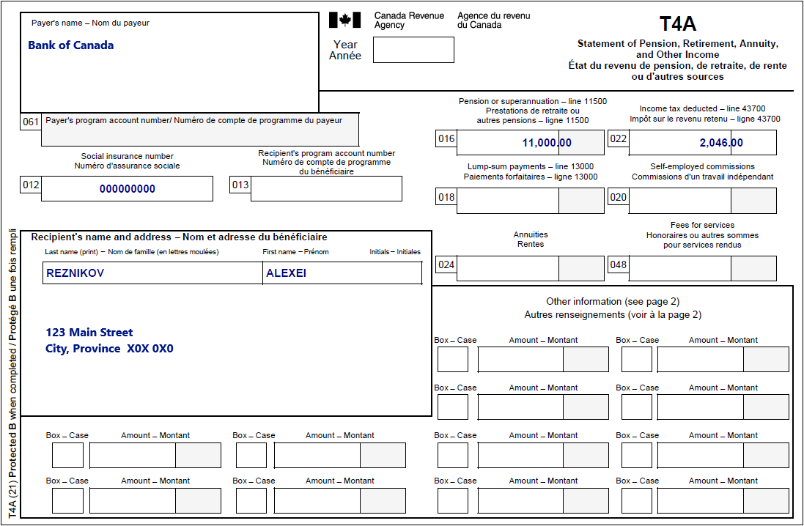
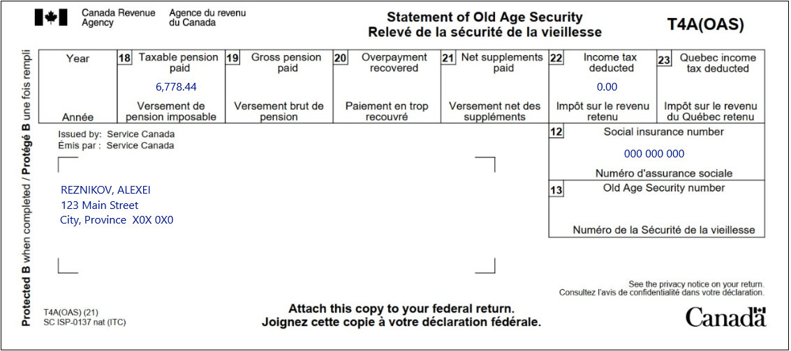
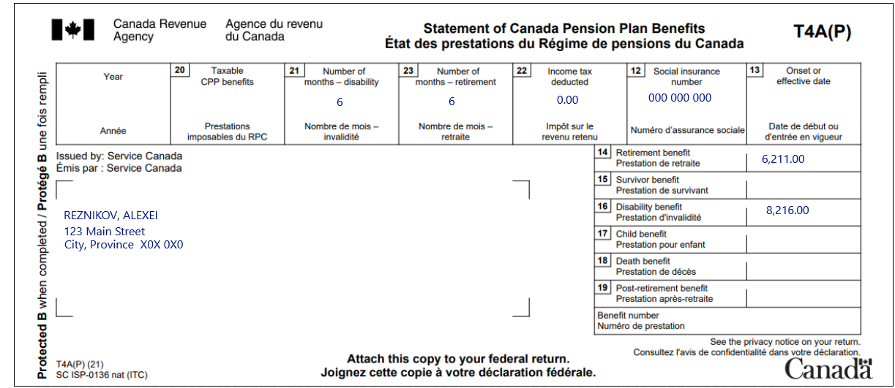
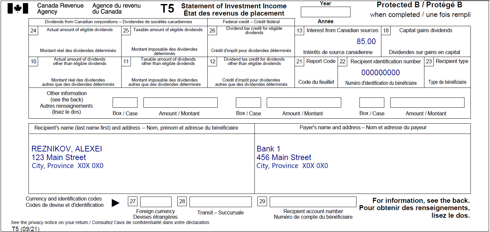

Reporting pension income splitting
Pre-test question
That's correct
Canada Pension Plan (CPP) and Old Age Security (OAS) income are not eligible for pension income splitting.
Sorry, that's incorrect
Canada Pension Plan (CPP) and Old Age Security (OAS) income are not eligible for pension income splitting.
Instructions
- Open the tax software
- Review the Background information and Required slips (tax slips, receipts, etc.)
- Provide all required information for the appropriate sections of the tax software
- Once completed, compare your results with the solution provided
- Afterwards, refer to the Takeaway points
Background information
Situation
Nadia is currently unemployed, has no income and is married to Alexei. Alexei is retired and receives income from the Canada Pension Plan (CPP), Old Age Security (OAS), interest on their investments and superannuation (Registered Pension Plan).
Alexei and Nadia are interested in pension income splitting since Nadia is currently unemployed.
Identification information
| Name | Alexei Reznikov |
|---|---|
| Social insurance number (SIN) | 000 000 000 |
| Address | 123 Main Street City, Province X0X 0X0 |
| Date of birth | October 2, 1946 |
| Marital status |
Married to: Nadia Reznikov on July 23, 1983 SIN: 000 000 000 DOB: April 23, 1961 |
Required slips
T4A – Statement of Pension, Retirement, Annuity, and Other Income (for Alexei)
Text version of the T4A slip
T4A – Statement of Pension, Retirement, Annuity, and Other Income
Protected B
Payer’s name: Bank of Canada
Recipient’s name and address:
Last name: Reznikov
First name: Alexei
123 Main Street
City Province X0X 0X0
Box 012: Social insurance number: 000 000 000
Box 016: Pension or superannuation – line 11500: 11,000.00
Box 022: Income tax deducted – line 43700: 2,046.00
T4A(OAS) – Statement of Old Age Security (for Alexei)
Text version of the T4A(OAS) slip
T4A(OAS) – Statement of Old Age Security
Protected B
Issued by: Service Canada
Reznikov, Alexei
123 Main Street
City Province X0X 0X0
Box 12: Social insurance number: 000 000 000
Box 18: Taxable pension paid: 6,778.44
Box 22: Income tax deducted: 0.00
T4A(P) – Statement of Canada Pension Plan Benefits (for Alexei)
Text version of the T4A(P) slip
T4A(P) – Statement of Canada Pension Plan Benefits
Protected B
Sent by: Service Canada
Reznikov, Alexei
123 Main Street
City Province X0X 0X0
Box 12: Social insurance number: 000 000 000
Box 21: Number of months – disability: 6
Box 23: Number of months – retirement: 6
Box 22: Income tax deducted: 0.00
Box 14: Retirement benefit: 6,211.00
Box 16: Disability benefit: 8,216.00
T5 – Statement of Investment Income (for Alexei)
Text version of the T5 slip
T5 – Statement of Investment Income
Protected B
Recipient’s name (last name first) and address:
Reznikov, Alexei
123 Main Street
City Province X0X 0X0
Payer’s name and address:
Bank 1
456 Main Street
City Province X0X 0X0
Box 13: Interest from Canadian sources: 85.00
Box 22: Recipient’s identification number: 000000000
Review your results
Solutions will be available in February 2023 as printable PDF.
Takeaway points
Steps to follow
- Review their background information and required slips
- Pension income splitting is a joint election that requires both spouses produce their tax returns at the same time. When you complete the Spouse interview type, select Complete information (recommended) when answering the question What information will you provide for your spouse?
- From Interview setup, tick the box next to Pension income, other income and split pension income, COVID-19 benefits (T4A, T4A(OAS), T4A(P), T4-RCA, T4RSP, T4RIF,T1032) in the Pension section and tick the box next to Interest, investment income and carrying charges/interest expenses/CNIL (T3, T5, T4PS, T5008, RC359) in the Investment income and expenses section
- Click T4A and pension income in the left-side menu, then click the + signs next to T4A, T4A(OAS), T4A(P) and Split pension income with spouse and enter the amounts from each tax slip
- Alexei’s T4A(P) indicates they received both CPP retirement and disability benefits throughout the year. Since the sum of box 23 and box 21 (indicating number of months) must not exceed 12, enter 6 in both box 23 and box 21
- Click Split pension income in the left-side menu and select Let MaxBack decide from the Do you wish to split eligible pension income with your spouse? drop down menu
- Click Interest, investment income and carrying charges in the left-side menu, then click the + sign next to T5 – Investment income and enter the amounts from Alexei’s T5
- When you complete Nadia’s Interview setup, ensure there is no box ticked in any section. If you tick the box next to No income to report in 2022 in the Specific situations section of Nadia’s Interview setup, the software is not able to finish the calculation of Nadia’s tax return
Only box 16 of Alexei’s T4A – Statement of Pension, Retirement, Annuity, and Other Income is eligible for the pension income splitting.
The amount transferred to Nadia is reported on line 11600 of her tax return and the same amount is reported on line 21000 of Alexei’s tax return. Any income tax withheld from the eligible pension income (box 22 of the T4A) is split in the same proportion as that income and is found on line 43700.
The software automatically generates form T1032 for each individual.
For more information refer to UFile instructions.